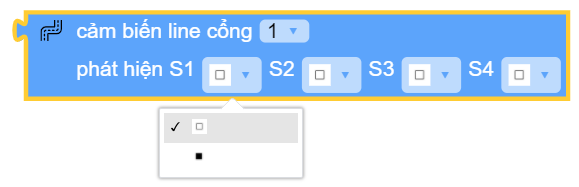
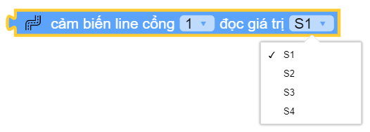

Các khối lệnh “Đầu vào”¶
ultrasonic.distance_cm(PORT)¶

Trả về giá trị khoảng cách đo được từ mắt đọc của ultrasonic tới vật thể đổi diện với đơn vị centimet
Tham số PORT có giá trị từ 1 ~ 6 tương ứng từ PORT 1 đến PORT 6 của xController.
ultrasonic.distance_cm(PORT) < 10¶

Trả về giá trị True hoặc False khi so sánh khoảng cách đo được từ cảm biến khoảng cách tới vật thể đổi diện với một giới hạn cho trước (đơn vị centimet)
line_array.read(PORT)¶
Đọc trạng thái của cảm biến dò vạch. Trong đó:
PORT : Có giá trị từ
1 ~ 6tương ứng từ PORT 1 đến PORT 6 của xController.Kết quả trả về
TUPLE4 giá trị tương ứng với trạng thái của 4 mắt S1 đến S4, ví dụ:(0, 1, 1, 0)với0là đọc được line trắng còn1là line đen.
line_array.read(PORT, TUPLE)¶
Đọc trạng thái từng mắt đọc của cảm biến dò vạch. Trong đó:
PORT : Có giá trị từ ``1 ~ 6``tương ứng từ PORT 1 đến PORT 6 của xController.
TUPLE : Có giá trị từ
S1 ~ S4tương ứng với 4 mắt đọc của Module.
btn_onboard.is_pressed()¶

Lấy giá trị hiện tại của nút nhấn trên board.
Kết quả trả về là True khi nút được nhấn, hoặc là False khi nút không được nhấn.
motion.get_accel(x|y|z)¶

Trả về giá trị góc nghiêng của xController và cho ta biết xController đang nghiêng về hướng nào.
Tầm giá trị lý thuyết: -16384 ~ 16384
x : nghiêng về sau hay trước.
y : nghiêng sang trái hay phải.
z : xController đang úp hay ngửa.


{kind=link}
{kind=link}
{kind=link}
{kind=link}
{kind=link}
{kind=link}
{kind=link}